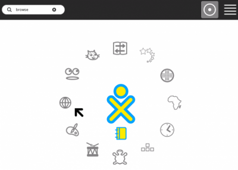
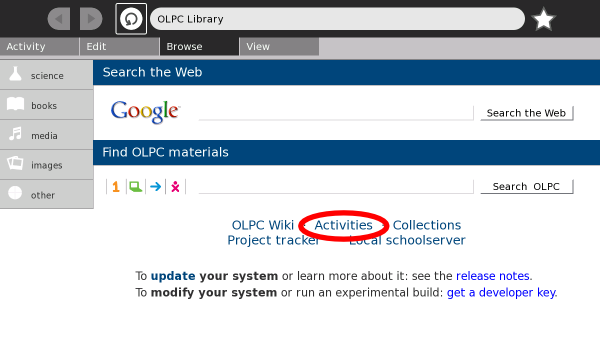
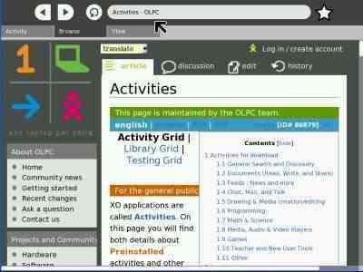
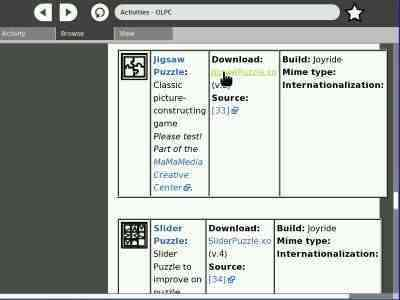
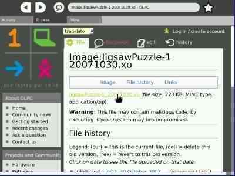
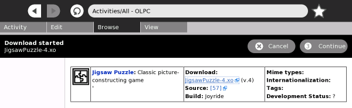
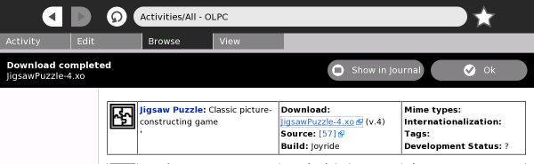

| Mettre fin à une Activité | Index | Aperçu des Activités |
Vous pouvez installer de nouvelles Activités en les téléchargeant et en les installant depuis un site web, depuis votre serveur d'école, depuis une clé USB ou depuis une carte SD.
Il y a deux manière d'installer de nouvelles Activités:
1. Dans la Vue Accueil, cliquez Naviguer.

2. Cliquez sur le lien Activities au milieu de la page (ou allez sur http://wiki.laptop.org/go/Activities)

Note: Toutes les activités Sugar ne sont pas listées sur la page http://wiki.laptop.org/go/Activities/All. Par exemple, la collection d'activité GCompris trouve sur http://wiki.laptop.org/go/GCompris.
3. Sur la page des Activités, cherchez une nouvelle Activité à installer. (Dans l'exemple ci-dessous l'activité Puzzle est installée.)

4. Cliquez sur le nom du fichier que vous voulez installer. Les fichiers d'Activité se terminent généralement par ".xo".

5. Vous pouvez vour retrouver sur une deuxième page. Cliquez le lien sur le fichier pour démarrer le téléchargement.

6. Pendant le téléchargement, vous pouvez "Annuler" ou "Continuer" le téléchargement.

7. Quand le téléchargement est terminé, cliquez sur "Montrer dans le Journal". (Si vous cliquez sur "OK", vous pouvez continuer la navigation et terminer l'installation depuis le Journal plus tard.)

8. Vous vous retrouvez dans la vue détaillée du Journal.
9. Cliquez sur "Démarrer" pour lancer l'Activité. L'Activité va être installée puis démarrée. Elle sera alors intégrée dans le mode liste de la vue Accueil.

Faites-vous plaisir avec votre nouvelle Activité !
Note: Si vous n'avez pas installé l'Activité lorsque vous l'avez télécharger, vous pouvez l'installer en ouvrant le Journal (cliquez sur l'icône Journal dans le cadre) puis en ouvrant la vue détaillée de cette entrée du Journal (cliquez sur l'icône  sur le côté droit de l'entrée).
sur le côté droit de l'entrée).
sugar-install-bundle /media/<USB device name>/<filename.xo>(Remplacer "<USB device name>" dans la commande par le nom actuel du périphérique USB et "<filename.xo>" par le répertoire et le nom du fichier .xo .)
Astuce: Pour déterminer le nom du périphérique USB, vous pouvez aller dans l'Activité Journal et lire le nom de l'icône dans le coin bas à gauche de l'écran.
Les Activités sont téléchargées séparément depuis l'interface utilisateur Sugar. Pour installer un ensemble d'Activités sur un portable OLPC XO-1:
| Mettre fin à une Activité | Index | Aperçu des Activités |